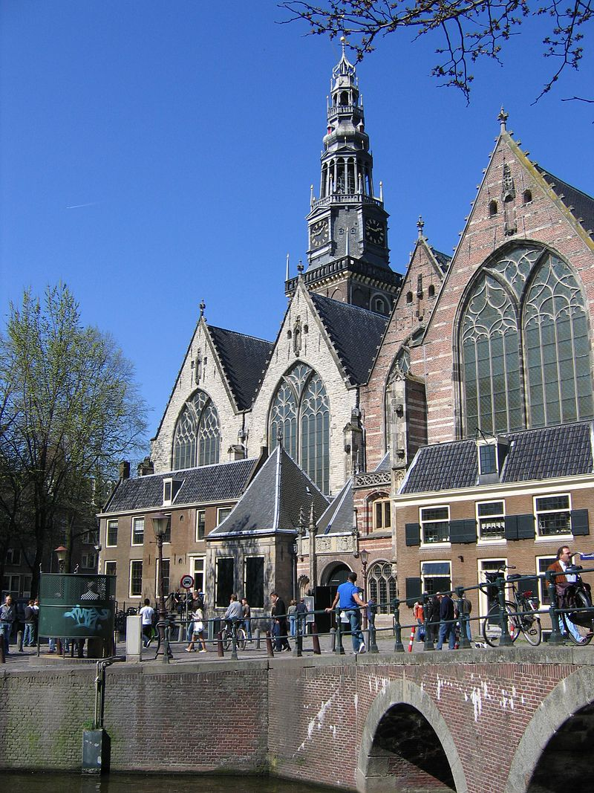
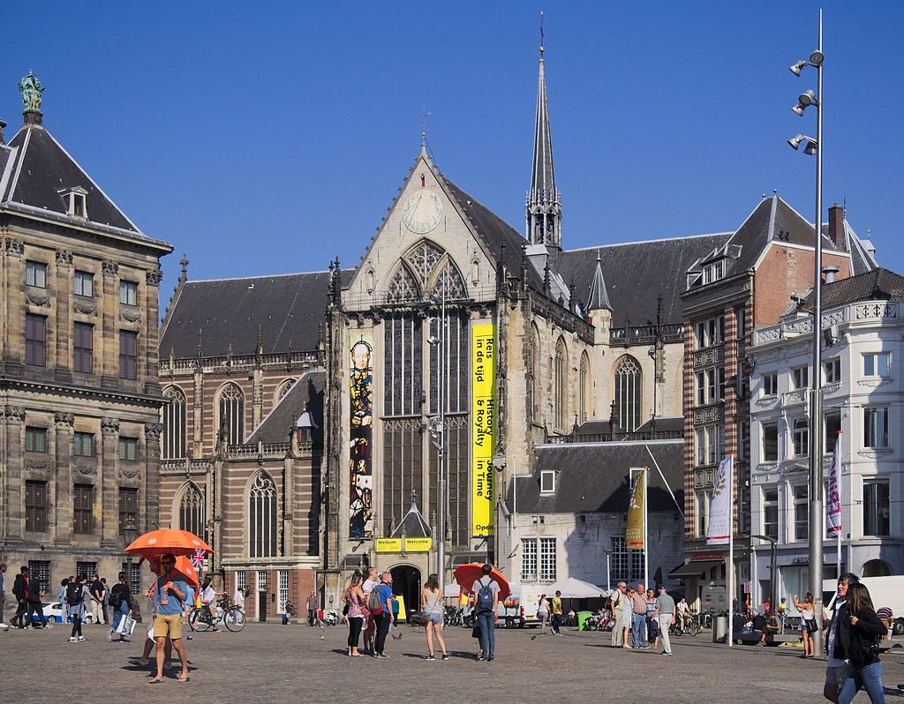

Oude Kerk
Starý kostel je nejstarší dochovaná stavba Amsterdamu. Nachází se ve čtvrti De Wallen, známé jako "čtvrť červených luceren" a je obklopen prstencem nevěstinců s výkladními skříněmi, v nichž se nabízejí prostitutky.
Ve věži Starého kostela je zavěšena zvonkohra, kterou odlil původně v roce 1858 François Hemony. Z jeho 35 zvonů o váze 0-3400 kg a tónovém rozsahu "c1"-"d1" až "b4" se do současnosti dochovalo jen 14 největších, ostatní jsou od zvonařské firmy Eijsbouts.
Nieuwe Kerk
Nový kostel se nachází na náměstí Dam, vedle Královského paláce. Je po Starém kostelu druhým nejstarším kostelem v Amsterdamu. Biskup z Utrechtu svolil se stavbou dalšího kostela v roce 1408, neboť Starý kostel byl již příliš malý na to, aby mohl posloužit všem obyvatelům rozrůstajícího se města. Nový kostel byl zasvěcen sv. Marii a sv. Kateřině.
Kostel utrpěl při požárech v letech 1421 a 1452 a zcela shořel v roce 1645, kdy byl vystavěn znovu v gotickém stylu. Velkou renovací prošel v letech 1892–1914, kdy byl opatřen mnoha novogotickými detaily. Další renovace se uskutečnila v letech 1959–1980.
V současnosti se již v kostele nekonají bohoslužby, ale slouží k výstavním účelům a k pořádání varhanních koncertů. V tomto kostele se konají intronizace nizozemských králů a svatby členů královské rodiny. Jako poslední zde byl v roce 2013 intronizován nizozemský král Vilém Alexandr Oranžský, který zde měl v roce 2002 svatbu s Máximou Zorreguieta Cerruti. Byly zde intronizovány i jeho předchůdkyně Beatrix, Juliána a Vilemína.
Muzea
Město je proslaveno svými početnými a významnými muzei a galeriemi. Na rozlehlém Muzejním náměstí Museumplein stojí blízko sebe situována hned tři muzea: Rijksmuseum, Van Gogh Museum a Stedelijk Museum.
Rijksmuseum
Říšské muzeum je největší muzeum umění v Nizozemsku. Vzniklo v době Batávské republiky roku 1798 poté, co byl roku 1795 svržen místodržitel princ Vilém V. Oranžský a jeho umělecké sbírky zabaveny. Sbírka 200 nejvýznamnějších objektů byla otevřena roku 1800. Velké zásluhy o toto muzeum si získal holandský král Ludvík Bonaparte, bratr císaře Francouzů Napoleona Bonaparte. V úvodních sálech Rijksmusea jsou na modelech lodí, portrétech námořních hrdinů, mapách a uměleckořemeslných výrobcích z námořního obchodu ilustrovány nizozemské dějiny 16.-18. století. Dále jsou představeny portréty a emblémy vlády princů dynastie Oranžsko-Nasavské a skupinové portréty představitelů města. K největším plátnům patří Hostina Svatojiřského spolku ostrostřelců od Bartholomea van der Helst. Tato hostina se konala v Amsterdamu u příležitosti podepsání mírové dohody po skončení třicetileté války roku 1648 ve vestfálském Münsteru. Největší část sbírek tvoří obrazy a sochy, především olejomalby a kresby nizozemských a vlámských malířů počínaje 17. stoletím. Nejznámějšími obrazy jsou díla Rembrandta Harmensze van Rijn, především jeho Noční hlídka, dále Židovská svatba a také jeho portréty, autoportréty a zátiší. Další vrcholná umělecká díla vystavená v Rijksmuseu jsou mj. obrazy Mlékařka a Žena čtoucí dopis od Jana Vermeera, portréty Franse Halse a také Žena s lékařem a Veselá rodina od Jana Steena.
Van Gogh Museum
Van Gogh Museum prezentuje největší sbírku obrazů Vincenta van Gogha na světě. Je v něm uložena také velká část dopisů, které malíř psal svému bratru Theovi, svým sestrám a spřáteleným umělcům. Dále jsou v muzeu vystaveny obrazy mj. Paula Gauguina, Claude Moneta, Felixe Valottona, Pabla Picassa a Henri de Toulouse-Lautreca.
Anne Frank Huis
Dům Anne Frankové, ve kterém se během druhé světové války ukrývala rodina židovského podnikatele v potravinářství Franka až do prozrazení v roce 1944, je věnován expozici o utajeném životě rodiny. Čtrnácti- až patnáctiletá dcera Anne Franková zde napsala svůj deník; po prozrazení úkrytu rodiny zahynula v koncentračním táboře. Její deník byl po skončení druhé světové války vydán v mnoha jazycích.